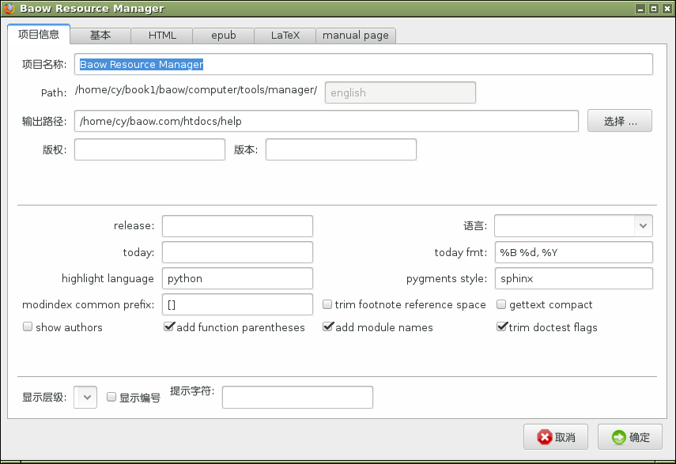

项目管理¶
通过项目管理可以在不同的任务组之间进行切换，方便组织和管理。
 :
:Sphinx 配置¶
这一步可跳过，如果需要生成Sphinx文档，则接着点击 Sphinx 配置 ，默认的配置一般足够了，大多数选项只需要输入文字就可以，但有些特殊的设置需要按照Python的语法格式进行。具体的方法请先查阅一下 Sphinx 的文档。

Sphinx 配置
打开项目¶
最后，点击 打开 按钮，来应用这个项目配置并打开。
快捷键¶
在项目管理窗口当中，支持的快捷键有：
| F11 | 设置开始时间 |
| F12 | 设置结束时间 |
| Ctrl-l | 从搜索结果中定位到原始数据 |
| Alt-f | 向下翻页，跳转16行 |
| Alt-v | 向上翻页，跳转16行 |
| Alt-c | 打开管理窗口 |
| Alt-x | 复制项目链接 |
| Alt-m | 打开前一项目 |
| Alt-o | 搜索 |
| Alt-u | 聚焦树 |
| 数字 | 记录跳转的行数 |
| 空格 | 切换状态 |
| a | 加入收藏 |
| Shift-d | 删除 |
| Delete | 删除 |
| q | 搜索结果定位 |
| Shift-m | 全部打开或关闭 |
| n | 新建项目 |
| Shift-n | 新建下级项目 |
| b | 后退 |
| Shift-f | 前进 |
| < | 回到顶部 |
| > | 到底部 |
| j | 聚焦下一行 |
| Shift-j | 底部 |
| Shift-l | 定位当前行 |
| k | 聚焦上一行 |
| K | 到顶部 |
| , | 聚焦同级上一个节点 |
| . | 聚焦同级下一个节点 |
| u | 聚焦父级节点 |
| h | 关闭文件夹 |
| Shift-h | 关闭下级所有文件夹 |
| o | 打开项目 |
| l | 打开文件夹 |
| c | 打开Sphinx配置 |
| Shift-v | 如果靠近底部则上移 |
| v | 查看属性 |
| 鼠标双击 | 打开项目，并关闭窗口 |
| 鼠标右键 | 在收藏和历史中删除一个条目 |